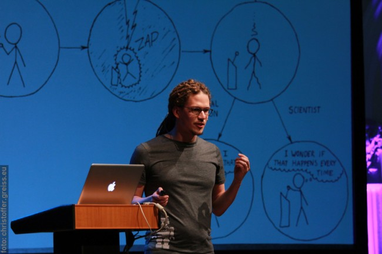

Hey, I'm Stefan Otte,
machine learning engineer,
data scientist and
consultant.
I like solving tough problems!
I'm a machine learner, data scientist, ex-roboticist, and consultant. I like turning crazy ideas into production systems using data science and software engineering.
Feel free to contact me via email: my_firstname dot otte at gmail dot com.
Primary Tech Stack


...but I'm pretty pragmatic when it comes to tech, tools, and methods. I also use Elixir/Erlang/OTP, C++, Java, Scala, Clojure, git, Make, AWS, GCP, RabbitMQ, Luigi, XGBoost, ...
Speaker
I like giving talks about machine learning related topics. This is me at a science slam in Lübeck where I talked about "Soccer, robotics, and recursive state estimation".

Short Bio
Freelance Machine Learning Engineer and Data Scientist realizing machine learning, reinforcement learning, and data science projects for customers in different industries. Teaching ML workshops. Focus on deep learning and computer vision.
Chief Data Scientist at RoomAR, working on content-based image retrieval, visual recommendation, computer vision, deep learning, and data science infrastructure.
Data Scientist at The unbelievable Machine Company, consulting and realization of agile data science projects for customers in different industries. Responsible for the full pipeline: from the idea, scoping, planning, to the implementation of the MVP. Working with structured and unstructured data (text and images).
Head of Technology at Karosso, doing data science in python and developing a real time bidding engine in Elixir/OTP.
Research scientist at the Machine Learning and Robotics Lab (MLR) at the University Stuttgart, Germany, applying machine learning methods in the fields of robotics. More specifically, I applied active learning methods to enable robots to detect degrees of freedom by manipulating their environments. My supervisor was Prof. Marc Toussaint.
Programmer at the Max Planck Institute for Human Development in the Department for Adaptive Behavior and Cognition on the EU project LarKC.
Computer Science student (Bachelor and Master) at the Freie Universität Berlin specializing in Artificial Intelligence and Robotics. I was part of the FUmanoids robot soccer team for four years and together we won many national and international awards/competitions.